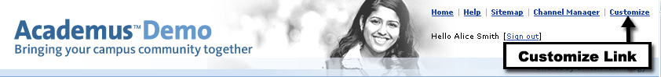
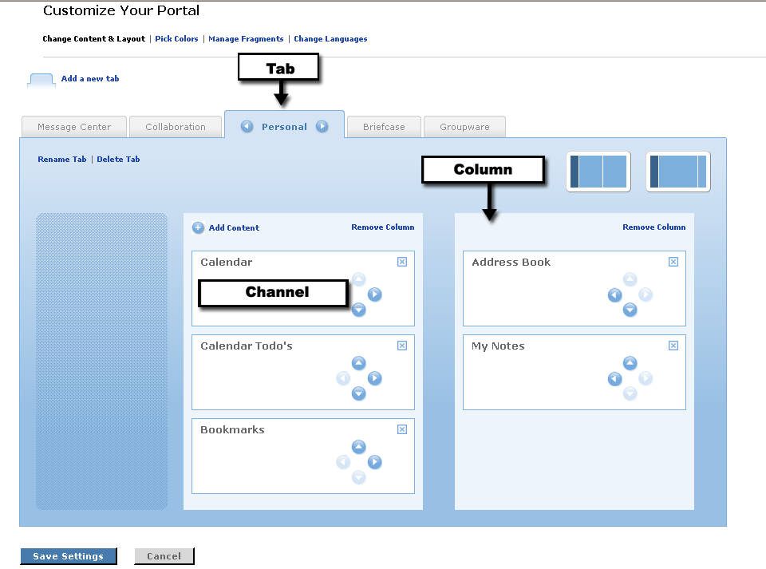
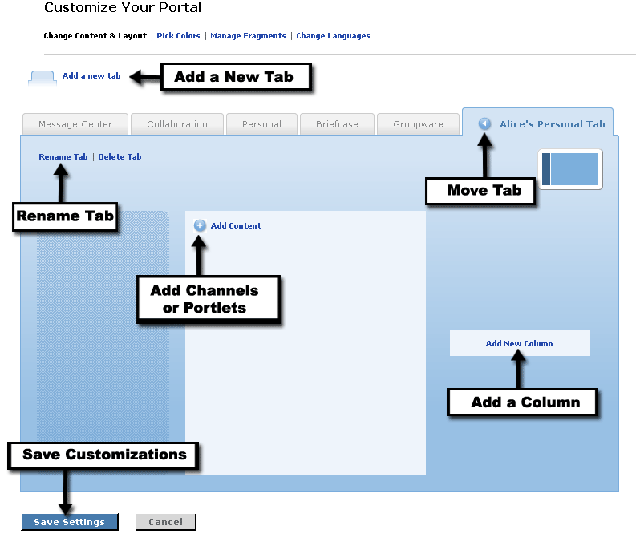
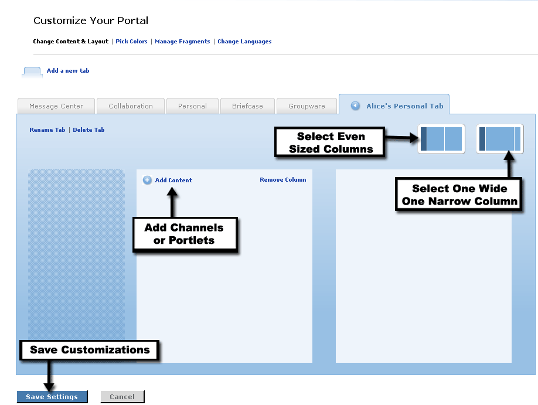
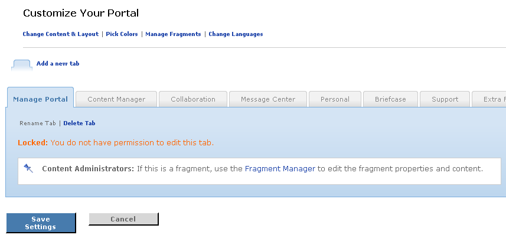

Personalization
Looking for more help options? Click Here

There are several links at the top of the page when you are in customization mode.
- Change Content & Layout- This feature allows you to add or remove tabs, columns, and channels from your layout. You can also rearrange or rename any non-restricted tabs, columns, and channels in your layout.
- Pick Colors - This will change the colors, and style of UNICON Academus. The styles available for selection will vary by institution.
- Manage Fragments - This option will be available for a limited number of users granted privileges to manage fragments within the portal.
- Change Languages - Use this link to change the language in your view.

Setting Up Your Personal Tabs
|
An individual's personal tabs are places where each user can set up and group channels for their own use. The user is then responsible for the layout and channels contained within their new tab. |
|
Before you can begin grouping and placing channels in a tab, you need to create the tab. Start by clicking on the Customize link at the top of the screen to enter Preferences Mode. This link may be identified as Preferences for some institutions. Then follow these instructions: |
Creating a New Tab
|

Moving, Renaming or Removing a Tab
To Move a Tab:
- First, you must select the tab to be moved. Click on the tab you want to move.
- You should notice that the tab's color has changed, and arrow icons are enabled on each side of the tab name.
- To move the tab one position to the left, click the Left Arrow icon.
- To move the tab one position to the right, click the Right Arrow icon.
(You may have to click the Left or Right Arrowsseveral times to position the tab exactly where desired.)
To Rename a Tab:
- First, you must select the tab to be renamed. Click on the tab you want to rename.
- You should notice that the tab's color has changed.
- Click the Rename Tab link.
- Enter the new tab name.
- Click Rename.
To Remove a Tab:
- First, you must select the tab to be removed. Click on the tab you want to remove.
- You should notice that the tab's color has changed.
- Click the Delete Tab link.
- The system will verify that you really want to remove the tab. Click OK to confirm.
- The tab and all of its contents have now been removed.
To save any of these changes and exit preferences mode, click Save Settings.
Columns and ChannelsAfter creating a new tab, the next step is populating and customizing it with columns and channels. A new tab will contain one column for content by default. To add an additional column, follow these steps:
- First, you must select the tab where you want to add the column.
- Click the Add New Column link to add a new column.
- Next select the desired column sizing by click the desired column presentation option. In a theme which includes a static first column, two options are provided for the other two columns either evenly sized or one wide, one narrow column.
- You can remove a column at any time by clicking the Remove Column link. You will be prompted to confirm the deletion prior to the removal of the column.
Once you have a column in place, you can add channels or portlets to the tab. To Subscribe to a channel, follow these steps:
- First, you must select the tab where you want to add channels or portlets.
- Click the Add Content link.
- Browse or Search through the channel listing to locate the channel you would like to add. When browsing, clicking the category name will display the list of available channels and portlets within that category.
- Once the desired channel has been located, click on the channel or portlet name, to view a description and access the subscribe option.
- Click the Subscribe to this channel link to add that channel to your layout.
- The channel will be placed in the first column in the top position. Use the arrow icons displayed within the channel to move the channel to the desired position.
- To remove an existing channel, click the Remove button in the upper right hand corner of the channel.
To save new columns and content layouts and exit preferences mode, click Save Settings.

Restricted Tabs
Certain tabs called fragments are created and managed by portal administrators. These tabs are not modifiable by an end user during the customization process. These tabs will be identified as locked by the system when selected in the Change Content and Layout view.

Choose a Skin
What is a Skin?
Skins are pre-produced visual schemes that can be applied to the user interface portion of a program. UNICON Academus makes use of skins to change the colors, fonts, graphics, and general layout of the application to provide the end user with several appealing choices. When someone changes skins on their layout, it only affects them. This does not affect people who log in through other user accounts.
| Picking Colors To view and select from a list of available skins, simply follow these steps:
|